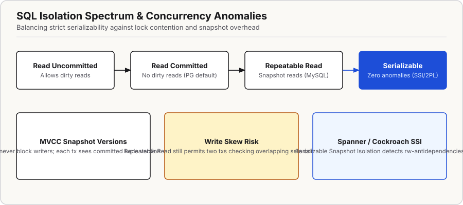

29 · Database Transactions & Isolation Levels
Part 2 · Storing data · ⏱️ ~25 min read · Prerequisites: 06 · Relational vs NoSQL
🏢 Real-world case studies: how Google (Cloud Spanner Serializable Snapshot Isolation via TrueTime) and Netflix (handling financial billing isolation in relational databases) implement transaction safety, in REAL_WORLD_EXAMPLES.md.
🧒 The 30-second version
A transaction is a safety shield: it bundles multiple database reads and writes into a single logical execution. Either everything succeeds (Commit), or if anything goes wrong, everything is completely undone (Abort/Rollback).
Without transactions:
- If a server crashes midway through transferring money between bank accounts, money vanishes from Account A but never reaches Account B.
- If two users try to book the last seat on a flight at the exact same millisecond, both get confirmed.
The Isolation Level determines how well concurrent transactions are shielded from each other:
- Read Committed: No dirty reads (you only read data that has been permanently committed).
- Snapshot Isolation / Repeatable Read: Readers see a consistent snapshot of the database as of the transaction start time; readers never block writers, and writers never block readers.
- Serializable: The gold standard. Transactions execute with the mathematical guarantee of running one-at-a-time, completely preventing race conditions like Write Skew.
🍕 Everyday analogy: The Shared Google Doc vs Meeting Rooms
Imagine multiple coworkers booking meeting rooms:
- Dirty Read (Read Uncommitted): Bob starts drafting an email saying "Room 101 booked", then changes his mind and deletes it. Alice peeked at Bob's draft screen and wrongly assumes Room 101 is taken.
- Lost Update: Alice and Bob both read the inventory: "Items remaining: 5". Alice sells 1 item and writes back 4. Bob sells 1 item and writes back 4. Two items were sold, but the counter says 4 instead of 3!
- Write Skew: A hospital requires at least 1 doctor on call. Doctors Alice and Bob are both on call. Both simultaneously request to go off duty. Under Snapshot Isolation:
- Alice's transaction checks: "Is another doctor on call?" Yes (Bob). Alice logs off.
- Bob's transaction checks: "Is another doctor on call?" Yes (Alice). Bob logs off.
- Catastrophe: Zero doctors remain on call! Only Serializable isolation catches this race condition.
| In everyday life | In Database Architecture |
|---|---|
| Peeking at an unsaved draft | Dirty Read |
| Overwriting someone's draft | Dirty Write |
| Two people selling the same item | Lost Update |
| Two doctors logging off simultaneously | Write Skew (Phantom Read) |
| Locking the door while in the room | Pessimistic Locking (2PL) |
| Checking if anyone changed the room before leaving | Optimistic Concurrency Control (SSI) |
🧩 The Problem It Solves
In high-concurrency production systems, executing transactions without strict isolation triggers catastrophic race conditions:
- Lost Updates: Concurrent increments or JSON modifications overwrite each other.
- Non-Repeatable Reads: Query 1 reads an account balance of <span class="math-inline">100. Query 2 (in the same transaction 10ms later) reads </span>50 because an external transaction committed in between.
- Write Skew: Two concurrent transactions read the same data, make independent decisions based on that data, and write to different rows, violating global business constraints.
🖼️ Picture It: The 4 SQL Standard Isolation Levels

flowchart TD
subgraph Levels["The Isolation Spectrum (Weakest to Strongest)"]
L1["1. Read Uncommitted<br/>(Suffers from Dirty Reads)"]
L2["2. Read Committed<br/>(No Dirty Reads, No Dirty Writes)"]
L3["3. Snapshot Isolation / Repeatable Read<br/>(MVCC, Consistent Snapshot, Prevents Lost Updates)"]
L4["4. Serializable<br/>(Guarantees Total Sequential Execution; Prevents Write Skew)"]
end
L1 --> L2 --> L3 --> L4
style L1 fill:#161b22,stroke:#f85149,stroke-width:2px;
style L2 fill:#161b22,stroke:#d29922,stroke-width:2px;
style L3 fill:#161b22,stroke:#58a6ff,stroke-width:2px;
style L4 fill:#161b22,stroke:#3fb950,stroke-width:2px;🔢 The Race Conditions & Anomalies Matrix
| Isolation Level | Dirty Read | Lost Update | Non-Repeatable Read | Write Skew / Phantoms | Default In |
|---|---|---|---|---|---|
| Read Uncommitted | ❌ Allowed | ❌ Allowed | ❌ Allowed | ❌ Allowed | Rarely used |
| Read Committed | ✅ Prevented | ❌ Allowed | ❌ Allowed | ❌ Allowed | PostgreSQL, Oracle, SQL Server |
| Repeatable Read (Snapshot) | ✅ Prevented | ✅ Prevented | ✅ Prevented | ❌ Allowed | MySQL InnoDB |
| Serializable | ✅ Prevented | ✅ Prevented | ✅ Prevented | ✅ Prevented | CockroachDB, Google Spanner |
⚙️ How It Works Under the Hood
1. Multi-Version Concurrency Control (MVCC)
Modern databases (PostgreSQL, MySQL InnoDB, CockroachDB) implement Snapshot Isolation using MVCC:
- When a row is updated, the database does not overwrite the old data in place.
- Instead, it appends a new version of the row with creation and expiration transaction IDs:
(row_id, value, created_by_tx, deleted_by_tx) - When Transaction 42 starts, it is assigned a read watermark of 42.
- It only sees row versions created before Transaction 42 that were not deleted before 42.
- The Superpower: Readers never block writers, and writers never block readers!
2. Preventing Write Skew: Two-Phase Locking (2PL) vs Serializable Snapshot Isolation (SSI)
- Two-Phase Locking (2PL): Pessimistic. Acquires shared locks (
SELECT ... FOR UPDATE) on read data. If another transaction wants to write, it blocks. - Serializable Snapshot Isolation (SSI): Optimistic. Transactions read and write concurrently without blocking. At commit time, the database tracks read-write conflicts. If two transactions exhibited write skew, the database aborts one and forces the client to retry.
⚖️ Trade-Offs & Decision Matrix
| Strategy | Performance / Throughput | Concurrency Anomalies | Operational Cost | Best Use Case |
|---|---|---|---|---|
| Read Committed | Highest Throughput | Vulnerable to non-repeatable reads & lost updates | Lowest CPU/RAM | Standard CRUD dashboards |
| Snapshot Isolation | High Throughput (MVCC) | Vulnerable to Write Skew | Medium RAM (old row versions) | Financial ledgers & carts |
| Serializable (2PL) | Low Throughput (Lock waits) | Zero Anomalies | High lock contention & deadlocks | Rare single-node high-stakes |
| Serializable (SSI) | High on low-conflict | Zero Anomalies | Abort/retry handling in app code | Distributed SQL (Spanner/Cockroach) |
🚫 Common Mistakes & Production Pitfalls
- Blind Overwrite Instead of Atomic Updates:
- Pitfall:
balance = SELECT balance; balance += 10; UPDATE SET balance = balance; - Result: Lost Update under Read Committed.
- Fix: Use atomic database expressions:
UPDATE accounts SET balance = balance + 10 WHERE id = 1;orSELECT FOR UPDATE.
- Pitfall:
- Long-Running Transactions Holding Locks:
- Pitfall: Opening a database transaction, making an external Stripe API call (taking 1.5s), and then committing.
- Result: Database connection pool starvation and lock timeouts. Never place third-party HTTP network calls inside database transactions!
- Table Bloat in MVCC:
- Pitfall: High-frequency updates without PostgreSQL
VACUUMmaintenance. - Result: Millions of dead tuple row versions consume disk space and degrade sequential scans.
- Pitfall: High-frequency updates without PostgreSQL
💻 Try It Yourself
The companion script demo.py simulates concurrent multi-threaded transactions demonstrating:
- The Lost Update Anomaly under naive execution vs. atomic Compare-And-Swap (CAS).
- The Write Skew Anomaly (the classic Doctors on Call problem) under Snapshot Isolation vs. Serializable enforcement.
Run it directly in your terminal:
python demo.py
🌍 Where You'll See It in Production
- Google Cloud Spanner: Provides globally distributed Serializable transactions using TrueTime atomic clocks to serialize transactions worldwide.
- PostgreSQL: Defaults to Read Committed, using MVCC to serve fast non-blocking reads while providing Serializable Snapshot Isolation (SSI) for mission-critical tables.
- Stripe: Enforces strict database transaction isolation and idempotency keys to ensure that a customer is never double-charged during API retries.
🎯 Top 5 Interview Questions & Deep Answers
Q1: "What is Write Skew, and why does Snapshot Isolation fail to prevent it?"
💡 Click to reveal the ideal senior engineering answer
Write Skew occurs when two concurrent transactions read the same data, make a decision based on that premise, and update different rows in a way that violates a global invariant (e.g. the Doctors on Call scenario, or reserving the same conference room). Snapshot Isolation fails because it only detects Dirty Writes on the same row (first-committer-wins). Because Transaction A updates Row 1 and Transaction B updates Row 2, Snapshot Isolation sees zero row conflict and allows both to commit! Write Skew can only be prevented by:
- Explicit Locking:
SELECT ... FOR UPDATE(Pessimistic). - Serializable Isolation: SSI tracks read-write dependency cycles and aborts one transaction.
Q2: "How does Multi-Version Concurrency Control (MVCC) eliminate read locks?"
💡 Click to reveal the ideal senior engineering answer
Instead of overwriting rows in-place, MVCC creates a new timestamped version of the row for every mutation. When a transaction starts, it receives a logical snapshot watermark. Any read operation simply seeks row versions created before that watermark, ignoring later writes. Because readers only inspect immutable past versions, readers never acquire locks and never block concurrent writers.
Q3: "What is the Lost Update problem, and what are 3 ways to prevent it?"
💡 Click to reveal the ideal senior engineering answer
A Lost Update happens when Transaction 1 and Transaction 2 both read value V, compute new values independently, and write back, with the second write blindly overwriting the first. Three ways to prevent it:
- Atomic Database Operations:
UPDATE counters SET val = val + 1 WHERE id = 10; - Pessimistic Locking:
SELECT val FROM counters WHERE id = 10 FOR UPDATE; - Optimistic Locking (Compare-And-Swap): Add a version column:
UPDATE counters SET val = 20, version = 2 WHERE id = 10 AND version = 1;If 0 rows are updated, the app retries.
Q4: "Why should you never execute external HTTP network calls inside a database transaction block?"
💡 Click to reveal the ideal senior engineering answer
Database transactions hold row-level locks and occupy a dedicated connection from the server's connection pool (typically limited to 50–200 connections). External HTTP calls (e.g., Stripe, Twilio) can take seconds or time out. Holding a database transaction open during network I/O exhausts the connection pool, locks other transactions, and triggers cascading system failure. Always execute database writes and external HTTP calls in separate decoupled steps using the Transactional Outbox Pattern.
Q5: "What is the difference between Two-Phase Locking (2PL) and Two-Phase Commit (2PC)?"
💡 Click to reveal the ideal senior engineering answer
- Two-Phase Locking (2PL) is a concurrency control mechanism on a single database ensuring Serializable isolation: transactions acquire locks during the growing phase and release them during the shrinking phase.
- Two-Phase Commit (2PC) is an atomic distributed consensus protocol across multiple independent databases/nodes (Prepare phase → Commit phase) ensuring all nodes commit or all abort. They are completely different concepts despite sharing the "Two-Phase" name!
📚 Go Deeper
- Designing Data-Intensive Applications by Martin Kleppmann: Chapter 7 (Transactions & Isolation Levels).
- A Critique of ANSI SQL Isolation Levels (Berenson et al., 1995): The foundational paper establishing modern isolation definitions.